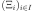

MonteCarloLHS¶
- class MonteCarloLHS(*args)¶
Monte Carlo LHS optimization.
Performs the optimization of an LHS using Monte Carlo simulations.
- Available constructors:
MonteCarloLHS(lhsDesign, N)
MonteCarloLHS(lhsDesign, N, spaceFilling)
- Parameters
- lhsDesign
LHSExperiment Factory that generate designs
- Nint
Number of simulations
- spaceFilling
SpaceFilling Criterion to be optimized Default spaceFilling is MinDist
- lhsDesign
Notes
MonteCarloLHS generate N designs using lhsDesign and returns the optimal one with respect to spaceFilling
Examples
>>> import openturns as ot >>> dimension = 3 >>> size = 100 >>> # Build standard randomized LHS algorithm >>> distribution = ot.ComposedDistribution([ot.Uniform(0.0, 1.0)]*dimension) >>> lhs = ot.LHSExperiment(distribution, size) >>> lhs.setAlwaysShuffle(True) # randomized >>> # Defining space fillings >>> spaceFilling = ot.SpaceFillingC2() >>> # RandomBruteForce MonteCarlo with N designs (LHS with C2 optimization) >>> N = 10000 >>> optimalLHSAlgorithm = ot.MonteCarloLHS(lhs, N, spaceFilling)
Methods
generate()Generate points according to the type of the experiment.
Generate points and their associated weight according to the type of the experiment.
Accessor to the object's name.
Accessor to the distribution.
getId()Accessor to the object's id.
getLHS()Return the LHS design.
getName()Accessor to the object's name.
Result accessor.
Accessor to the object's shadowed id.
getSize()Accessor to the size of the generated sample.
Return the space-filling criterion to be optimized.
Accessor to the object's visibility state.
hasName()Test if the object is named.
Ask whether the experiment has uniform weights.
Test if the object has a distinguishable name.
setDistribution(distribution)Accessor to the distribution.
setName(name)Accessor to the object's name.
setShadowedId(id)Accessor to the object's shadowed id.
setSize(size)Accessor to the size of the generated sample.
setVisibility(visible)Accessor to the object's visibility state.
- __init__(*args)¶
- generate()¶
Generate points according to the type of the experiment.
- Returns
- sample
Sample Points  which constitute the design of experiments with
 . The sampling method is defined by the nature of
the weighted experiment.
. The sampling method is defined by the nature of
the weighted experiment.
- sample
Examples
>>> import openturns as ot >>> ot.RandomGenerator.SetSeed(0) >>> myExperiment = ot.MonteCarloExperiment(ot.Normal(2), 5) >>> sample = myExperiment.generate() >>> print(sample) [ X0 X1 ] 0 : [ 0.608202 -1.26617 ] 1 : [ -0.438266 1.20548 ] 2 : [ -2.18139 0.350042 ] 3 : [ -0.355007 1.43725 ] 4 : [ 0.810668 0.793156 ]
- generateWithWeights()¶
Generate points and their associated weight according to the type of the experiment.
- Returns
Examples
>>> import openturns as ot >>> ot.RandomGenerator.SetSeed(0) >>> myExperiment = ot.MonteCarloExperiment(ot.Normal(2), 5) >>> sample, weights = myExperiment.generateWithWeights() >>> print(sample) [ X0 X1 ] 0 : [ 0.608202 -1.26617 ] 1 : [ -0.438266 1.20548 ] 2 : [ -2.18139 0.350042 ] 3 : [ -0.355007 1.43725 ] 4 : [ 0.810668 0.793156 ] >>> print(weights) [0.2,0.2,0.2,0.2,0.2]
- getClassName()¶
Accessor to the object’s name.
- Returns
- class_namestr
The object class name (object.__class__.__name__).
- getDistribution()¶
Accessor to the distribution.
- Returns
- distribution
Distribution Distribution used to generate the set of input data.
- distribution
- getId()¶
Accessor to the object’s id.
- Returns
- idint
Internal unique identifier.
- getLHS()¶
Return the LHS design.
- Returns
- value
LHSExperiment Result the factory that builds initial design to be optimized
- value
- getName()¶
Accessor to the object’s name.
- Returns
- namestr
The name of the object.
- getResult()¶
Result accessor.
- Returns
- value
LHSResult Result of generation that contains the optimal design, some criteria and history
- value
- getShadowedId()¶
Accessor to the object’s shadowed id.
- Returns
- idint
Internal unique identifier.
- getSize()¶
Accessor to the size of the generated sample.
- Returns
- sizepositive int
Number
 of points constituting the design of experiments.
of points constituting the design of experiments.
- getSpaceFilling()¶
Return the space-filling criterion to be optimized.
- Returns
- value
SpaceFilling Criterion function to be optimized
- value
- getVisibility()¶
Accessor to the object’s visibility state.
- Returns
- visiblebool
Visibility flag.
- hasName()¶
Test if the object is named.
- Returns
- hasNamebool
True if the name is not empty.
- hasUniformWeights()¶
Ask whether the experiment has uniform weights.
- Returns
- hasUniformWeightsbool
Whether the experiment has uniform weights.
- hasVisibleName()¶
Test if the object has a distinguishable name.
- Returns
- hasVisibleNamebool
True if the name is not empty and not the default one.
- setDistribution(distribution)¶
Accessor to the distribution.
- Parameters
- distribution
Distribution Distribution used to generate the set of input data.
- distribution
- setName(name)¶
Accessor to the object’s name.
- Parameters
- namestr
The name of the object.
- setShadowedId(id)¶
Accessor to the object’s shadowed id.
- Parameters
- idint
Internal unique identifier.
- setSize(size)¶
Accessor to the size of the generated sample.
- Parameters
- sizepositive int
Number
of points constituting the design of experiments.
- setVisibility(visible)¶
Accessor to the object’s visibility state.
- Parameters
- visiblebool
Visibility flag.